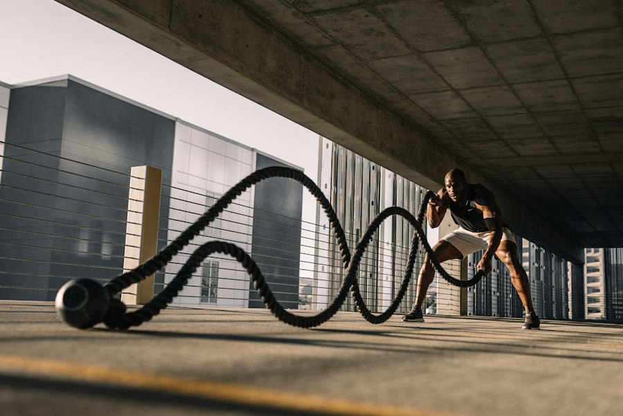

Jon Jones
Jon Jones es un luchador profesional de MMA reconocido por su técnica, su alcance y su gran habilidad para combinar golpes y lucha.

Para llegar a ser un luchador profesional se necesita entrenar todos los días, cuidar la alimentación y mantener una mentalidad fuerte.